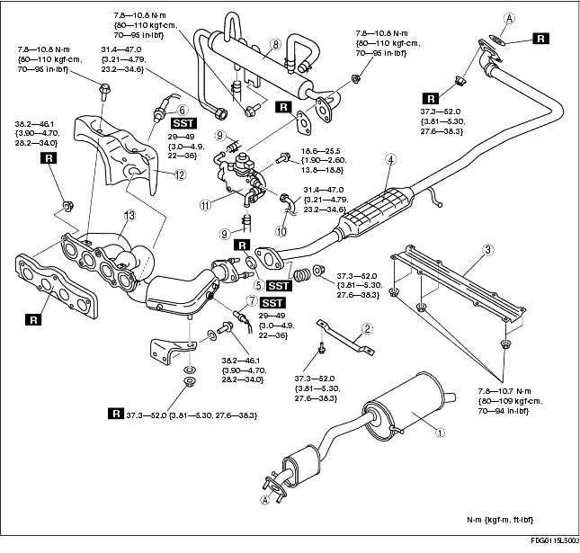

1. Disconnect the negative battery cable.
2. Before the engine coolant hose, remove the engine coolant. (See ENGINE COOLANT REPLACEMENT [ZY].)
3. Remove in the order indicated in the table.
4. Install in the reverse order of removal.
5. Inspect the front wheel alignment and adjust it if necessary. (See FRONT WHEEL ALIGNMENT.)

|
1
|
Main silencer
|
|
2
|
Crossmember
|
|
3
|
Member
|
|
4
|
TWC
|
|
5
|
Seal ring
(See Seal Ring Removal Note.)
(See Seal Ring Installation Note.)
|
|
6
|
Front HO2S
|
|
7
|
Rear HO2S
|
|
8
|
EGR cooler
|
|
9
|
Engine coolant hose
|
|
10
|
EGR pipe
|
|
11
|
EGR valve assembly
|
|
12
|
Exhaust manifold insulator
|
|
13
|
Exhaust manifold
|
1. Remove the seal ring using a flathead screwdriver being careful not to damage the pipe.
1. Remove the front wheels and tires.
2. Disconnect the steering shaft from the steering gear and linkage side. (See STEERING GEAR AND LINKAGE REMOVAL/INSTALLATION.)
3. Remove the No.1 engine mount rubber. (See ENGINE REMOVAL/INSTALLATION [ZY].)
4. Loosen the exhaust manifold insulator bolts.
5. Move the exhaust manifold insulator slightly out of the way and loosen the exhaust manifold nuts.
6. Remove the front stabilizer and stabilizer control link installation bolt.
7. Remove the front crossmember (See FRONT CROSSMEMBER REMOVAL/INSTALLATION.)
8. Remove the exhaust manifold together with the insulator by lowering it to the underside of the vehicle.
1. Remove the following parts for easier access.
1. Tighten the exhaust manifold installation nuts in the order shown in the figure.
1. Temporarily install the seal ring to the pipe so that the seal ring is even with the flange.
2. Install the SST to the seal ring so that the SST is even with the flange.
3. Press in the seal ring by tapping the SST using a plastic hammer until the seal ring contacts the flange.